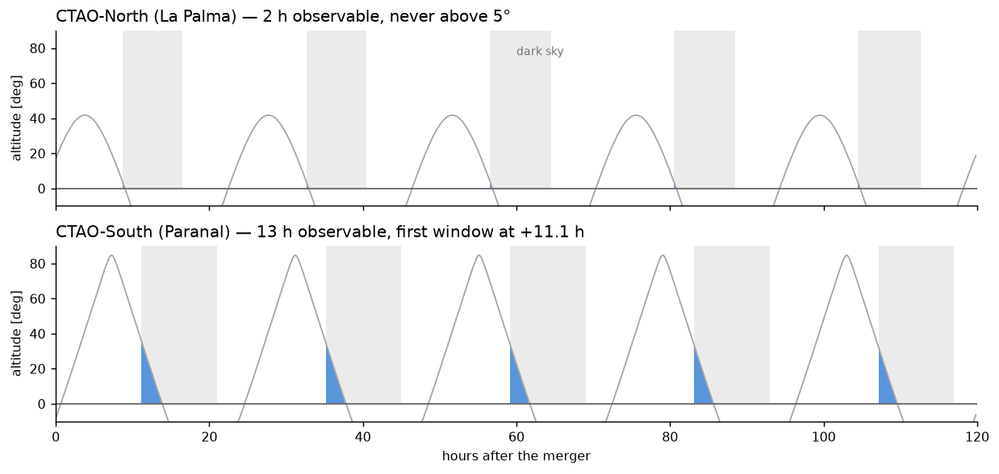
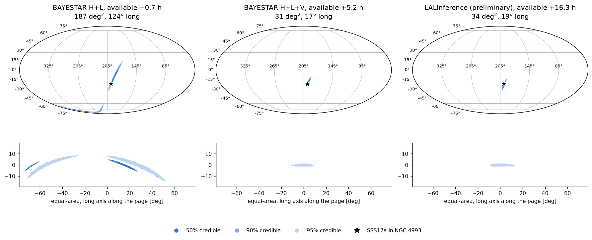
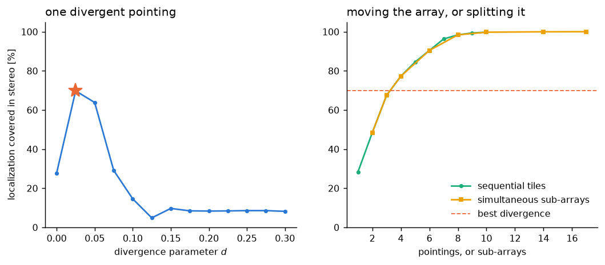
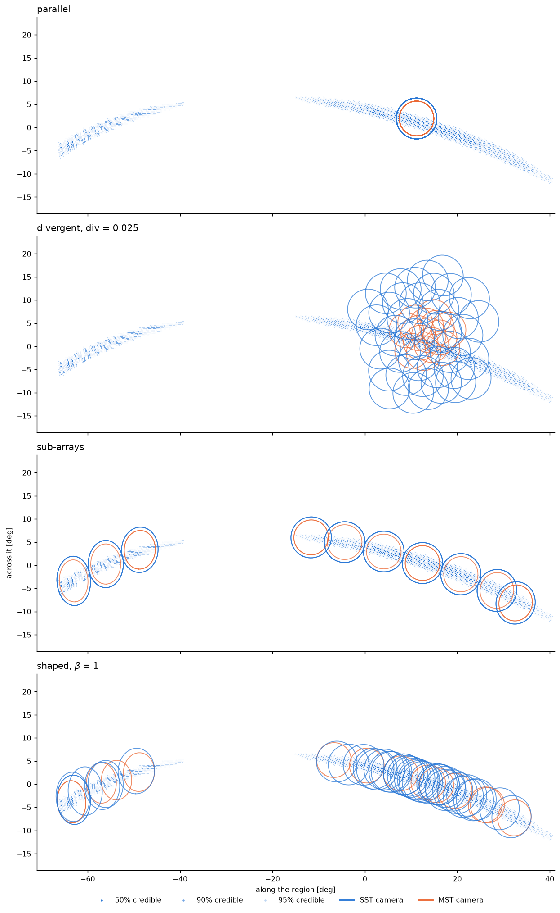
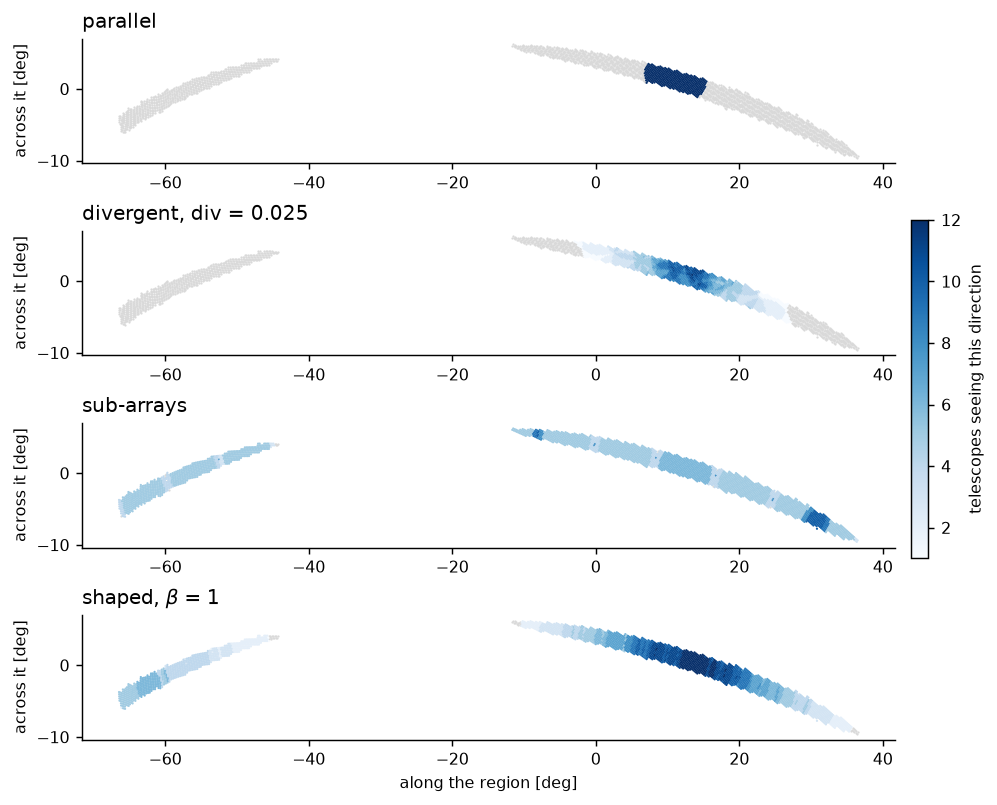
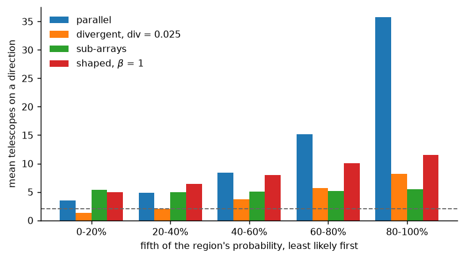

GW alerts follow-up: divergence is not the way¶
A gravitational-wave localization is a probability distribution, and the first alerts can cover long, narrow arcs on the sky. We use GW170817 as a case study and examine how the CTAO-South array could have covered the localization available at the time of the alert. Divergent pointing covers at most 69.8 % of the localization for this configuration. Splitting the array into 10 sub-arrays covers 99.8 % in a single exposure, with every telescope assigned to a target. Allowing the telescope multiplicity to vary across the localization further concentrates observing time where the probability is highest, from 5.0 telescopes in the least probable fifth to 11.5 in the most probable fifth.
The analysis is purely geometrical. It considers the telescope pointings and
camera footprints, using the definitions introduced in Definitions and
the coverage limit discussed in The divergence spread and ceiling. All quantities are computed by
docs/scripts/make_gw170817.py when the documentation is built. The
localization maps are included in divtel/data/gw170817, so the analysis can
be reproduced for this event or applied to other localizations in the same
format.
The observational constraint¶
GW170817 was detected at 12:41 UTC on 17 August 2017. The localization was refined in several successive alerts. For a real-time follow-up, the relevant localization is the one available when the telescopes can start observing, not the final localization obtained later.
There are therefore two independent timescales: the time required to obtain a useful localization and the time at which the source becomes observable from the site.
{kind=link}

Fig. 1 Altitude of the GW170817 localization at both CTAO sites over the five nights after the merger.¶
At declination -23 degrees, the source culminates at La Palma during daylight in August. During the five nights following the merger (Fig. 1), CTAO-North had 2 h of astronomical darkness with the localization above the horizon. Its maximum altitude was only 5.2°. Observations at such low elevations would correspond to an air mass of roughly 15, making CTAO-North unsuitable for this event.
At Paranal, the localization was observable for 13 h during the same period. The first observing window opened 11.1 h after the merger and reached a maximum altitude of 37°. The three-detector localization became available 5.2 h after the merger, leaving 5.9 h before the first useful South-array observation.
GW170817 therefore provides a favourable case in which the improved localization was available in time. The more relevant question for a general follow-up strategy is what could have been done if the source had become observable earlier, or if the improved localization had taken longer to produce.
The localization regions¶
The area of a localization does not describe its geometry. A two-detector gravitational-wave network generally produces an elongated localization because the timing information constrains the source to a broad arc rather than a compact region.
The first GW170817 localization covered 187 deg² at the 90 % level. Its maximum extent was 124°, with two lobes separated by roughly 100 degrees (Fig. 2).
{kind=link}

Fig. 2 The three GW170817 alert maps, shown on the full sky and in equal-area projections of the relevant region.¶
Map |
Since merger |
90 % area [deg²] |
Equivalent radius [deg] |
Containment radius [deg] |
Length [deg] |
Elongation |
|---|---|---|---|---|---|---|
+0.7 h |
187 |
7.7 |
62.1 |
124.3 |
8.0 |
|
+5.2 h |
31 |
3.1 |
8.3 |
16.5 |
2.6 |
|
+16.3 h |
34 |
3.3 |
9.6 |
19.2 |
2.9 |
We use three geometrical quantities to characterize these regions.
The equivalent radius is the radius of a circular region with the same area. The containment radius is the radius of the smallest cone containing the complete localization. This is the relevant quantity when asking whether an array can cover the whole region with one pointing. The length is the maximum angular separation between two points in the region.
Including Virgo reduced the localization area by 6 and the containment radius by 8. The resulting regions were still larger than the maximum parallel extent of either array: 4.4° at CTAO-South and 3.8° at CTAO-North. A conventional parallel pointing could therefore not cover the full localization.
Note
The computed areas reproduce the published values of 190, 31 and 33.6 deg² to better than 2 %. The three regions also contain the measured position of SSS17a in NGC 4993. These checks validate the treatment of the published sky maps.
For the remainder of the analysis we use the first 90 % alert map, placed at 60 degrees elevation at CTAO-South and truncated at the horizon. 17 % of its probability lies below the horizon for this geometry and is excluded. The remaining region contains 150 deg² of the usable probability. Coverage fractions below refer to this visible region.
The horizon cut is applied before evaluating the pointing strategies because it changes the geometry of the region itself; it is not equivalent to simply scaling down its area.
Divergent pointing¶
Divergent pointing describes the array using a single parameter: the angular offset of the telescopes from a common nominal direction. This produces a symmetric distribution of camera footprints. For the approximately circular CTAO-South layout, the resulting aspect ratio varies from about 1.2:1 near the zenith to 3.4:1 close to the horizon.
The first GW170817 localization has an elongation of 8 and is curved. Its geometry therefore differs substantially from the footprint produced by symmetric divergence. This geometrical mismatch limits the achievable coverage independently of the specific divergence chosen.
{kind=link}

Fig. 3 Coverage as a function of divergence and as a function of the number of independent tiles or sub-arrays.¶
The left panel of Fig. 3 shows the resulting coverage as a function of divergence. Coverage reaches a maximum of 69.8 % at d = 0.025, corresponding to 14° of spread. Increasing the divergence beyond this value separates the camera footprints sufficiently that parts of the localization are observed only once while other parts are missed.
At the optimum, only 30 of the 51 telescopes have part of the localization in their field of view. The remaining telescopes observe outside the localization. Consequently, 80 % of the usable localization cannot be covered by symmetric divergent pointing for this map.
This is a geometrical upper limit for the chosen pointing model, rather than the result of an unsuccessful optimization.
Sequential tiling¶
A simpler alternative is to keep the telescopes parallel and observe the localization sequentially. Each pointing is placed on the part of the probability distribution that remains uncovered.
This approach uses the full array for every pointing: all telescopes observe the same target region, and no telescope is deliberately placed outside the localization.
4 pointings are sufficient to match the best divergent configuration, while 9 pointings reach 99 % coverage. Unlike divergent pointing, this result does not depend on the zenith angle. For a fixed camera size, the problem is equivalent to covering a rigid region with circular footprints and is therefore invariant under rotation (Tracking a source).
The disadvantage is temporal rather than geometrical. A divergent configuration observes the whole covered region continuously during the exposure. With sequential tiling, each part of the region receives only a fraction of the total observing time. For a steady source this reduces the exposure at each position. For a rapidly fading transient, however, the relative importance depends on the source timescale and on the tiling cadence.
Simultaneous tiling with sub-arrays¶
The CTAO array can also be divided into several groups. Each group is pointed at a different part of the localization, allowing the full array to observe the region simultaneously.
Every telescope is assigned to a target, each sub-array operates with a conventional parallel pointing, and the different parts of the localization are observed at the same time.
Strategy |
Coverage |
Telescopes per shower |
On target |
Exposures |
|---|---|---|---|---|
Parallel |
28 % |
49 |
51 of 51 |
1 |
Divergence, d = 0.025 |
70 % |
6 |
30 of 51 |
1 |
Sequential tiling |
77 % |
49 |
51 of 51 |
4 |
Sub-arrays, 10 groups |
100 % |
5 |
51 of 51 |
1 |
Shaped pointing |
100 % |
8 |
51 of 51 |
1 |
For this geometry, sub-array tiling provides higher coverage than divergent pointing while retaining full telescope assignment. It also increases the average telescope multiplicity over the covered region.
There is a simple geometrical limit behind this result. Divergent pointing preserves the total solid angle of the individual camera fields of view. If the mean multiplicity is two, the maximum area that can be covered is
where \(\Omega\) is the camera solid angle.
This limit can be reached by dividing the array into pairs and placing the pairs at non-overlapping positions. Each pair provides multiplicity two over one camera footprint, while the different footprints cover distinct parts of the localization.
Divergent pointing does not reach this limit because its multiplicity is not uniform. Some regions are covered by a single telescope, while others receive three or more telescopes. The latter provide more depth than required to maintain multiplicity two, while the former represent unused coverage capacity.
CTAO-North reaches 54 % of this geometrical limit and CTAO-South reaches 59 %.
For CTAO-South, the corresponding values are 1434 deg² for the two-telescope limit and 839 deg² for the best divergent configuration. At equal observing time and equal mean multiplicity, sub-array tiling therefore covers 1.7 times more usable sky than divergent pointing.
The main advantage of divergent pointing is operational simplicity: the configuration is specified by a single parameter. This can be useful for scheduling and for situations in which the target localization changes during an observation.
Shaped pointing¶
A localization map contains more information than its boundary. The probability density varies across the region, so telescope multiplicity does not necessarily need to be uniform. More telescopes can be assigned to the most probable parts of the map and fewer to its tails.
This motivates optimizing the telescope pointings directly rather than restricting them to a symmetric divergent configuration or to equally sized sub-arrays. We maximize
where \(w_k\) is the probability assigned to direction k and \(m_k\) is the telescope multiplicity at that position.
The objective has three useful properties.
The logarithm favours a multiplicity proportional to probability. Ignoring the cut and the finite discretisation, maximizing
subject to a fixed multiplicity budget
gives
The probability-weighted multiplicity therefore follows from the objective rather than being imposed as a constraint.
The finite value of :math:`epsilon` controls the cost of uncovered probability. In the ideal logarithmic objective, \(m_k=0\) gives an undefined value. A small positive \(\epsilon\) provides a finite penalty. Increasing it makes the optimization relatively more tolerant of uncovered low-probability regions and allows more multiplicity to accumulate in the core.
The multiplicity cut enforces useful stereoscopic coverage. A direction observed by fewer than \(m_\mathrm{cut}\) telescopes should not contribute as useful coverage. Without this term, the optimization can favour spreading single telescopes over the whole localization. Such a configuration maximizes geometrical coverage but does not provide the intended stereoscopic performance.
The resulting configurations are shown below. The camera footprints are drawn at their actual size and area, using the same angular scale for all strategies.
{kind=link}

Fig. 4 Camera footprints of four pointing strategies over the GW170817 localization.¶
The difference between the four strategies is primarily geometrical. Parallel pointing places all 51 cameras at the same position. Divergent pointing produces a symmetric footprint, which cannot reproduce the elongated and curved localization. Sub-arrays distribute groups of cameras along the localization. Shaped pointing removes the common pointing constraint and distributes the cameras according to the probability map, including different telescope multiplicities in different parts of the region.
The same configurations are shown below in terms of telescope multiplicity.
{kind=link}

Fig. 5 Telescope multiplicity for four pointing strategies over the first GW170817 localization.¶
Parallel pointing produces high multiplicity in a small region and leaves most of the localization uncovered. Divergent pointing increases the covered area but retains a relatively broad and symmetric multiplicity distribution. Sub-array tiling covers the localization in separate regions with approximately uniform multiplicity. Shaped pointing follows the probability distribution more closely.
{kind=link}

Fig. 6 Mean telescope multiplicity in successive fifths of the localization probability, from least to most probable.¶
Allowing independent pointings removes the main geometrical limitation of divergent pointing. Free pointing covers 99.7 % of the region, compared with 69.8 % for the best divergent configuration. However, sub-array tiling already reaches 99.8 %.
The main difference is therefore the distribution of multiplicity. With shaped pointing, the mean multiplicity increases from 5.0 telescopes in the least probable fifth to 11.5 in the most probable fifth. The equal sub-array configuration ranges from 5.4 to 5.5 and is approximately flat.
At equal total multiplicity, the probability-weighted configuration sacrifices only a small amount of geometrical coverage while increasing the mean multiplicity from 5.2 to 8.2. The available multiplicity is therefore distributed more closely to the probability distribution rather than being spent uniformly.
How much of this requires free pointing?¶
The previous comparison uses sub-arrays of equal size. This restriction is important because it fixes the multiplicity within each sub-array footprint. An unequal division of the array can already produce a non-uniform multiplicity profile.
divtel.strategy.weighted_split() implements this idea. It keeps the
pointing positions obtained from the equal sub-array configuration and changes
only the number of telescopes assigned to each group. The group sizes are
chosen approximately in proportion to the probability covered by each group,
subject to a minimum multiplicity of \(m_\mathrm{cut}\).
Strategy |
Coverage |
Mean |
Quintiles |
|---|---|---|---|
Even split, 10 groups |
99.8 % |
5.22 |
5.4 4.9 5.0 5.2 5.5 |
Even split, 17 groups |
100.0 % |
5.99 |
4.9 5.5 6.1 5.9 7.5 |
Weighted split, 14 groups |
99.5 % |
7.29 |
5.0 5.7 7.3 8.4 9.8 |
Weighted split, 17 groups |
99.9 % |
7.03 |
4.9 5.9 7.3 7.7 9.3 |
Shaped pointing |
99.7 % |
8.21 |
5.0 6.4 8.0 10.0 11.5 |
The resulting gradient does not require free pointing. 14 weighted groups place 9.8 telescopes on the most probable fifth, compared with 11.5 for the fully optimized configuration.
This separates two effects that are otherwise easy to conflate. Unequal allocation is responsible for much of the multiplicity gradient. Free pointing provides an additional improvement by allowing the telescope footprints themselves to move independently, rather than restricting them to a predefined set of sub-array positions.
The practical consequence is that an observatory that does not want to schedule 51 independent telescope directions can still recover much of the benefit by assigning different numbers of telescopes to different parts of the probability map. This requires a different scheduling heuristic, not a fundamentally different pointing algorithm.
Is proportional multiplicity really optimal?¶
The logarithmic objective predicts
We can test this by replacing the target probability distribution with \(w^\beta\). If the argument above is correct, the best agreement with the actual probability distribution should occur at \(\beta=1\).
β |
Coverage |
Mean |
Mismatch |
Least to most likely fifth |
|---|---|---|---|---|
0.0 |
100.0 % |
6.3 |
0.247 |
5.5 → 7.0 |
0.5 |
99.9 % |
7.2 |
0.188 |
5.2 → 8.9 |
1.0 |
99.7 % |
8.2 |
0.163 |
5.0 → 11.5 |
1.5 |
98.9 % |
9.1 |
0.172 |
4.8 → 14.0 |
2.0 |
97.1 % |
10.2 |
0.204 |
4.6 → 16.6 |
Mismatch is the Kullback-Leibler divergence between the normalized probability distribution and the normalized telescope multiplicity, evaluated over the part of the map satisfying the stereoscopic cut. A value of zero would correspond to an exactly proportional multiplicity distribution.
The minimum occurs at \(\beta=1\), as expected from the analytic derivation. This is primarily a consistency check rather than an independent optimization result. For \(\beta>1\), more multiplicity is concentrated in the high-probability core, while coverage of the low-probability tails decreases.
Mismatch must nevertheless be interpreted together with coverage. An array that observes only the highest-probability part of the localization can match the shape of the probability distribution while leaving most of the localization uncovered.
There is also a finite angular resolution associated with the camera itself. Telescope multiplicity is obtained by summing camera footprints, so the resulting multiplicity distribution cannot reproduce structures substantially smaller than one camera field. Convolving the probability distribution with a representative CTAO-South camera changes it by 0.172, compared with 0.163 for the shaped configuration. The camera footprint is therefore a fundamental resolution scale for this approach.
Try it yourself¶
The results above use one localization, one site and one elevation. The
interactive example allows these parameters to be changed. The same
quantities are computed by divtel.visualization.camera_rims(),
divtel.visualization.multiplicity_over_region() and
divtel.strategy.multiplicity_by_probability().
The interactive shaped-pointing example uses a reduced telescope budget and runs a coordinate-ascent optimization in the browser. It therefore takes longer to evaluate and can produce a slightly different, generally weaker, solution than the configuration used for the results above.
Limitations¶
Geometry only. divtel models camera footprints and telescope
pointings. It does not include effective area, energy threshold, background
rates or event reconstruction performance. The CTAO-South observations of
GW170817 would have occurred at relatively large zenith angles, where the
energy threshold increases significantly. Divergent or low-multiplicity
configurations can further affect the reconstruction performance. Geometrical
coverage is therefore a necessary condition for a detection, but it is not a
measure of sensitivity. None of the coverage fractions reported here should
be interpreted as sensitivity estimates.
One localization at one time. Each configuration is optimized for a single localization at a single instant. During an observation the sky continues to move and gravitational-wave localizations can be updated within hours. A fixed set of independent pointings can therefore become suboptimal after an alert update. Divergent pointing is less sensitive to small changes in the target geometry because it is described by a single parameter, while sub-array strategies provide a compromise between flexibility and operational complexity.
Local optimization. The shaped configurations are obtained with coordinate ascent from multiple starting points. Each proposed change is evaluated using the exact objective, and the optimization stops when no local change improves it. The result can therefore depend on the initial configuration. Sub-array configurations provide useful starting points because they are already good solutions according to the independent geometrical argument above.
Bounded pointing search. For each divergence, the pointing direction is
optimized over the localization and one camera field of view beyond it. It is
not searched over the entire sky. This bound is deliberate. An unrestricted
optimization can place a widely divergent array far from the localization,
allowing a small part of the camera ring to intersect the target while leaving
most telescopes on empty sky. Such a solution has a high geometrical coverage
score but is not useful for follow-up. See
divtel.pointing.best_pointing().
Reproducing this analysis¶
The following reproduces the main sub-array calculation:
import astropy.units as u
from importlib.resources import files
from divtel import strategy
from divtel.layout import load_array
from divtel.region import SkyRegion
data = files("divtel") / "data"
array = load_array(data / "cta-south-paranal-alpha-prod6.ecsv")
# The first alert map, placed at 60 degrees and cut at the horizon.
whole = SkyRegion.from_table(data / "gw170817" / "bayestar_hl_90.ecsv.gz")
region, underground = whole.place(60 * u.deg, 180 * u.deg).visible_part()
strategy.point_subarrays(array, region, count=10, m_cut=2)
strategy.describe(array, region, m_cut=2)["covered_stereo"]
The GW170817 credible regions are included with divtel, so no additional
data are required for this example.
To construct regions from published HEALPix localizations, install the optional dependency:
pip install divtel[skymap]
The script divtel/data/gw170817/make_regions.py generates the bundled
GW170817 regions and provides a minimal example of this workflow.